The objective
Reduce phone calls and branch visits by 20% YoY.
Data analysis and research
9% of all phonecalls are customers calling to check that fraud hasn't been commited on their account. These calls are categorised as unrecognised transaction.
47% of enquiries regarding unrecognised transaction are mistakes and not fraudulent.
Skybranch monthly analytics
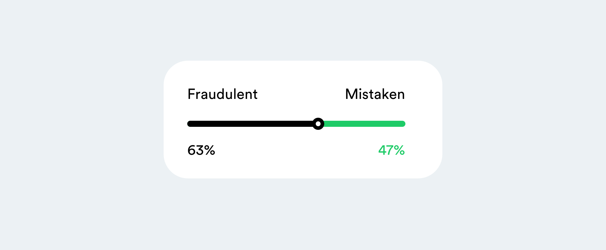
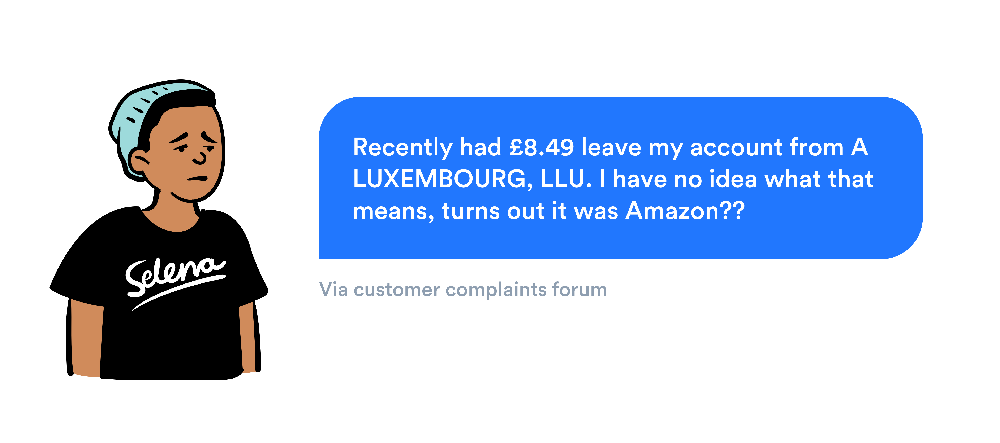
"I spend a lot of my day talking to customers helping them understand a specific transaction. They always come in to speak to us directly thinking it wasn't them."
Branch colleague during field research
So, what is the problem?
The quality of our database for transactional data is very poor. Customers aren't able to understand their payments, resulting in lots of call centre and branch staff time.
What do we want to see?
Having clearer transactional data leads to fewer concerns around fraud therefore reducing the amount of people contacting Barclays for help.
What’s the customer benefit?
Easy to understand and feel confident when viewing your transactions.
What do we measure?
Fewer calls tagged with 'unrecognised transaction.'' NPS to rise because of clearer data less app store reviews about bad transactional data.
That's great, but let's take this further.
My thinking was to organise and facilitate a GV Design Sprint, a tried and tested method in solving complex problems, quickly.
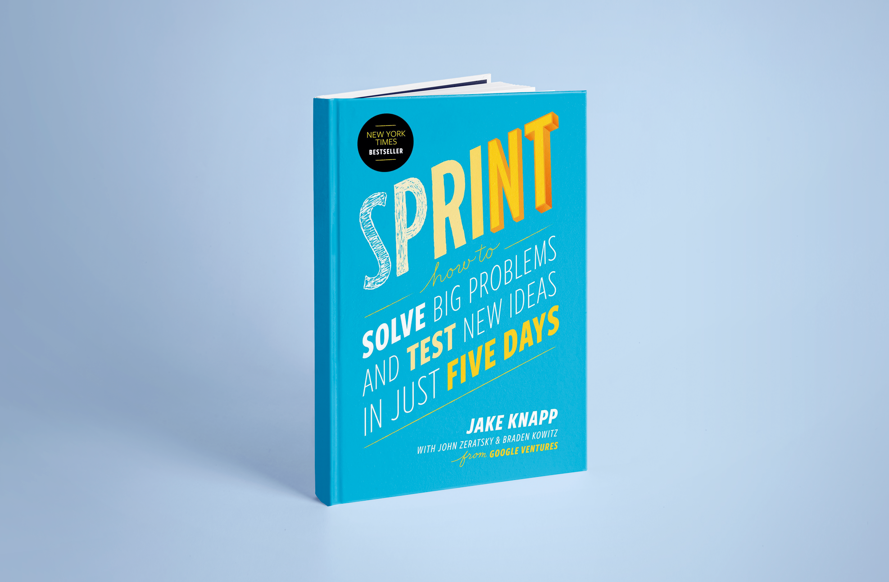
I created a "How Might We" as the overarching challenge for the sprint.
"How might we make transactions clearer to customers, give them better control of purchases and innovate in this space."
🚀 Sprint concept - digital receipts
Why can’t a customer tap on the £82.97 payment made at John Lewis and see that it was a jumper, Google mini and chopping board? Why in this age do I get a piece of paper but there's no digital equivalent within my banking app?
We could start by partnering with our corporate clients like John Lewis and it would be a win for them, Barclays and the customer.

I then quickly brought the concept to life so that we could put it into customer testing.
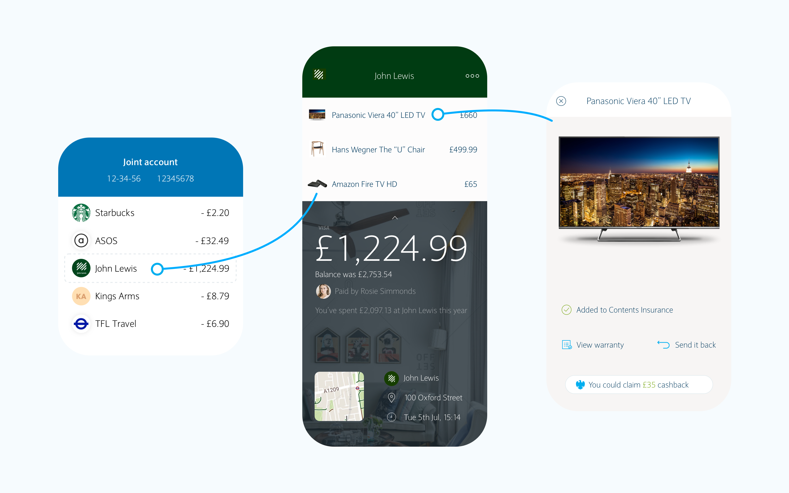
Customer validation
We first conducted guerrilla research within our branches with customers to see if the concept worked.
Once confirmed, we conducted a series of usability tests to ensure that the experience itself worked, and iterated after coming across major findings.

Getting buy-in
With this needing quite a large engineering effort, the product owner and I sat down together to create a business case.
♻️ Save the planet
Saves businesses money having to print receipts, the majority of which are impossible to recycle due to them containing the same chemicals used in single-use plastic.
💵 Commercial opportunities
If Barclays can see detailed transactional data, we can possibly profit from it. If it's a flight to Spain, why not surface live foreign currency rates, or use it as a timely reminder to get travel insurance
🤷♂️ Proof of purchase
If you lose a receipt, most places won't allow you to return your product. Some will if bought online, but many don't as there is no proof of purchase. This would help banks with the thousands of credit disputes they receive yearly.
🥵 Difficult for businesses
It's a great feature for Barclays' business customers. Many business owners rely on receipts as part of their end of year taxes. They are required by law to keep them for a number of years, resulting in taking up office space and being overwhelming to manage.

Designing & Iterating
MVP Release
First iteration was to clean up the data and to provide logos next to each transaction. We found through user testing customers found it better to scan logos than read lines of text. If for any reason there still was an issue with the name of where the payment was sent, the logo helped.
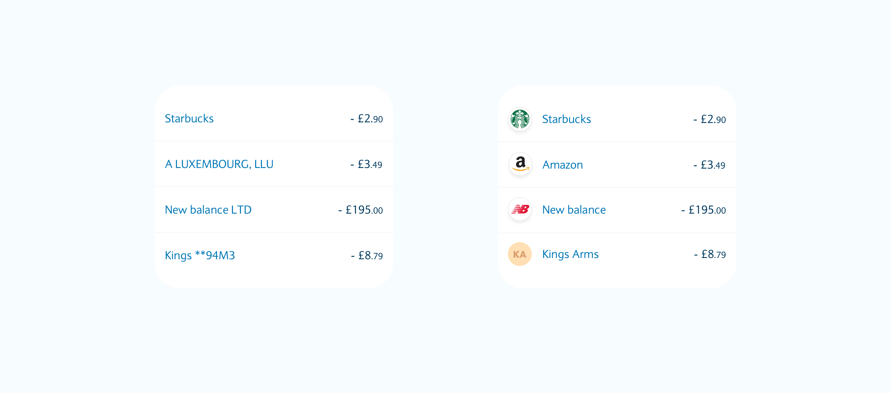
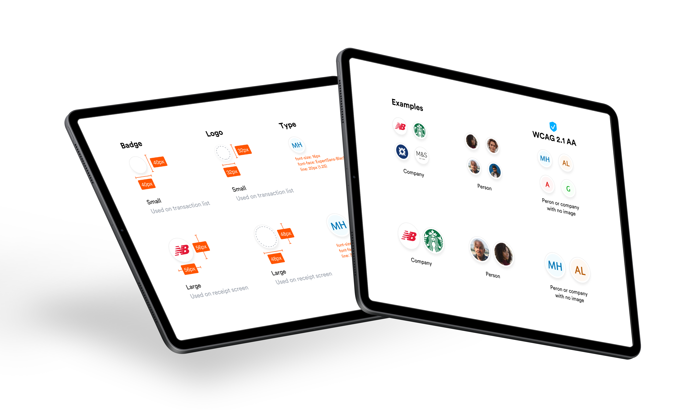
Release 2
Our second iteration was to make the transaction list items tappable, then having a page with information of the payment. We also worked with the notifications team to make it clear the transaction was tappable.
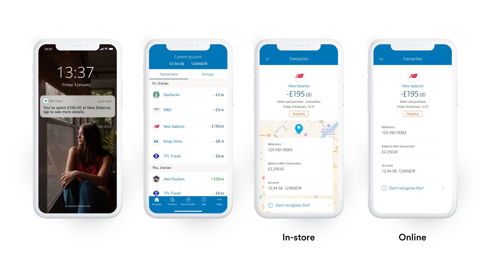
Beta testing for receipts
Before pushing live, We wanted to test the usability of the receipts page, so decided to use Barclays Launchpad, which is a beta app available to ~50,000 Barclays customers.
It allows them to provide direct feedback and we track feature usage with embedded analytics. We also ran an A/B test for a couple of very small differences to make sure that we had the best design.
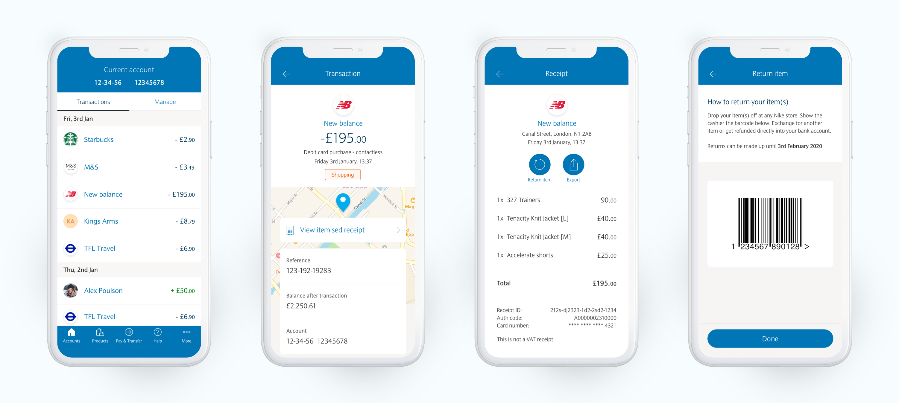
 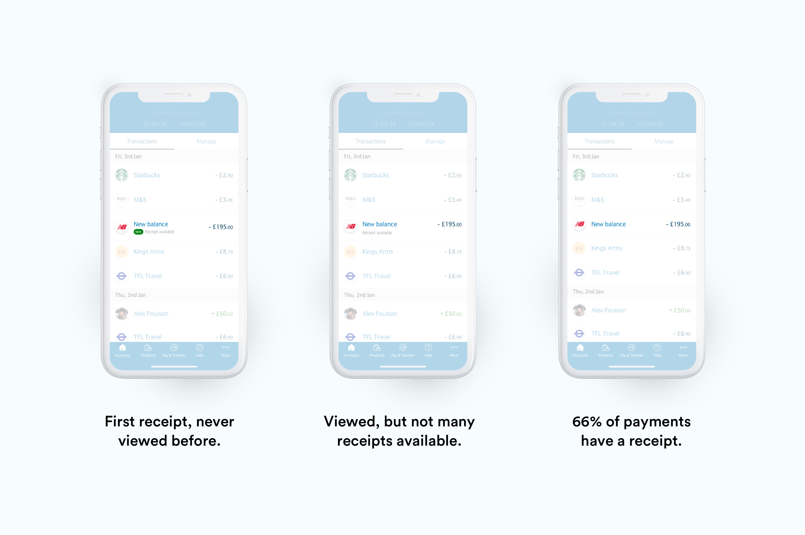
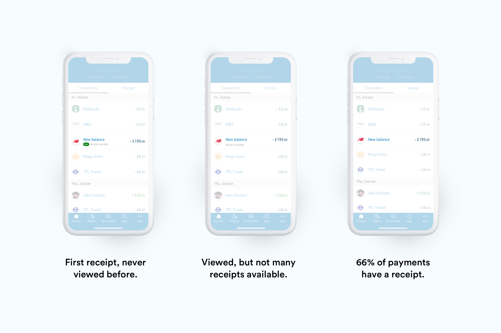
Public release
Looking at the analytics from the beta release, engagement was okay but not as high as we wanted. So to help our 8 million customers discover the feature.
I created a design pattern for the rest of the design team to use for any new features being released, the pattern utilises the feature on instagram using stories to explain the product. This makes the feature seem more engaging than a one-pager, it also means the customer doesnt have to tap to proceed.
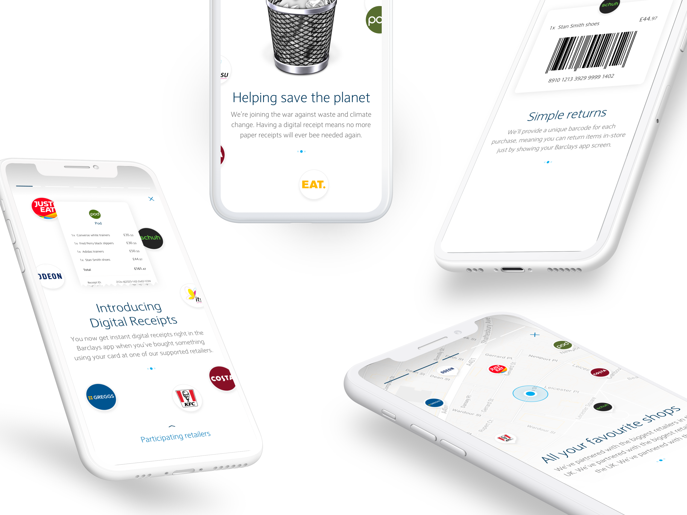
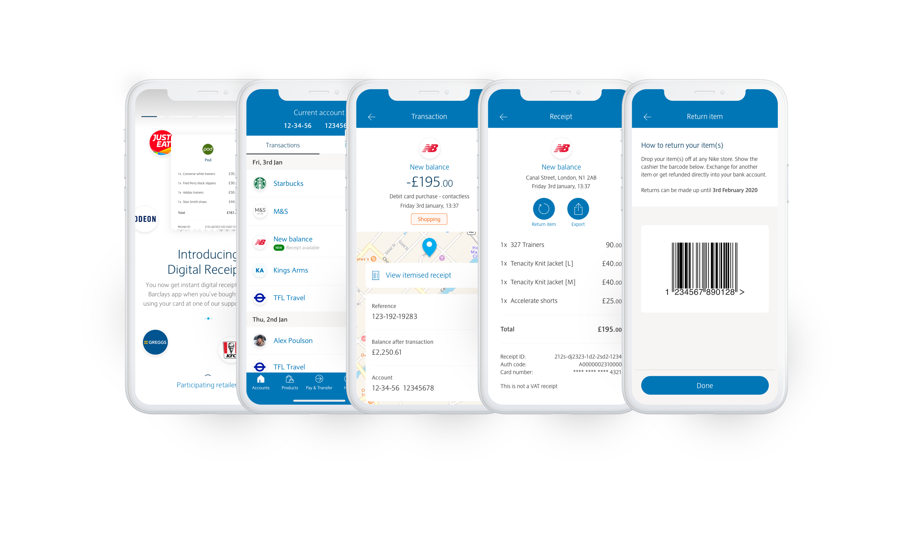

Next release
Our next release brings receipts one tap closer, uses images for products and allows customers to re-purchase something straight within the Barclays app.
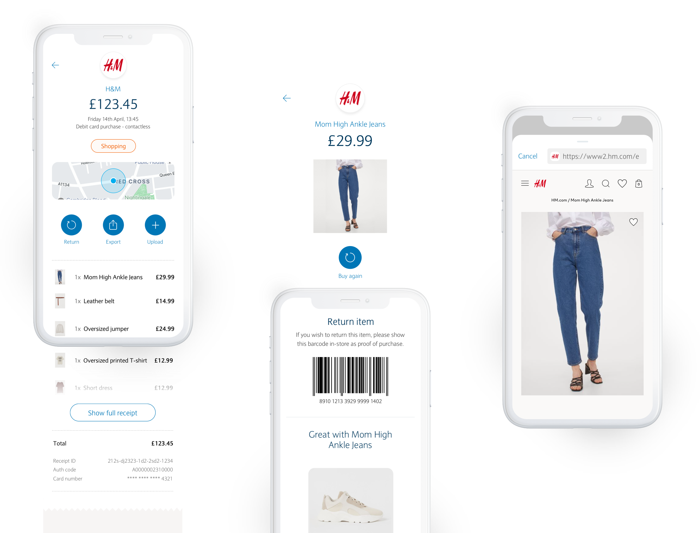
Since launch, have seen a reduction in calls regarding unrecognised transaction 80%.
Skybranch analytics YoY